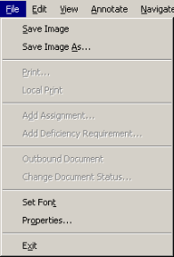

The File menu commands are enabled according to how the viewer was launched, the configuration of your workstation, global settings used by your site, attributes of specific document types, and your user permissions.
The File menu when viewer is launched from

|
Menu command |
Toolbar icon |
Description |
|---|---|---|
|
Save Image |
N/A |
Saves the current image to the current location and file name; if you have rotated the image, the rotated aspect is maintained. Note: Do not use this option when viewing a color image. The system replaces the color image as a black and white version with a corresponding loss of quality. Available only when you view a document as an image. Not available when the viewer is launched from ICU. |
|
Save Image As |
N/A |
Saves the current image to a new file name and/or location; if you have rotated the image, the rotated aspect is maintained. Displays a standard Windows Save As dialog box. Note: Do not use this option when viewing a color image. The system creates the new image as a black and white version with a corresponding loss of quality. Available only when you view a document as an image. Not available when the viewer is launched from ICU. |
|
Set Font |
N/A |
Allows you to set the font for text files displayed in the viewer window. Note: The Bold, Italic, and Bold Italic font attributes are certified as available only with the Times New Roman font face. They may be available with other font faces. |
|
Properties |
N/A |
Displays technical details about the document on display. Information includes Filename and path, File Type, Dimensions, Bits/Pixel, Compressed Filesize Bytes, Uncompressed Image Bytes, Compression Ratio, Volume Name, Device Name, and Server Name. |
|
Exit |
|
Closes the viewer window. |